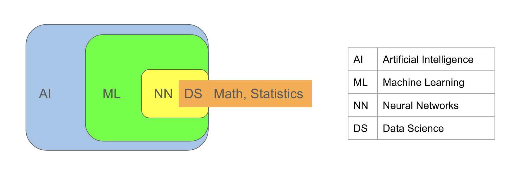

Introduction to ML#
Machine learning (ML) is the process of learning from data or extracting knowledge from data. It constitutes a subset of
Artificial Intelligence (AI), a broader term encompassing applications that may not rely on data, such as simple if-else statements where decisions are dictated by the user which might depend on some conditions.
For instance, consider a code using an if-else statement to categorize an individual’s class based on whether their height exceeds 6 feet. This scenario exemplifies an Artificial Intelligence (AI) application. However, for it to qualify as a Machine Learning (ML) application, the boundary value of 6 feet must be determined by the algorithm itself, based on prior data comprising classes and heights of a specific group of individuals.
Another term frequently associated with AI and ML is Neural Networks, also known as Deep Learning. These are ML algorithms primarily used for processing complex data types such as audio and image data. Neural networks can be perceived as compositions of numerous functions.
Data science involves using scientific methodologies, mathematics, and statistics to perform the aforementioned tasks.

Applications#
Machine Learning finds numerous applications across various fields. Here are a few examples:
fraud detection
image recognition
speech recognition
recommendation systems
spam filtering
tumor detection
customer segmentation
customer service (virtual assistants)
chatbots
algorithmic trading
credit scoring
risk assessment
Types#
There are three primary types of machine learning:
Supervised Learning: This method involves data that includes both input and output, known as labeled data. There are two main tasks in supervised learning:
Classification: In classification tasks, the output is a categorical variable, such as class labels. For instance, in a spam filter, the output is either “spam” or “normal,” making it a categorical variable. Some classification algorithms include:
k Nearest Neighbors (knn) Classifier
Logistic Regression
Decision Tree Classifier
Support Vector Classifier
Regression: In regression tasks, the output is a continuous variable, such as a real number. For example, in house price prediction, the output can be any number within a range, making it a continuous variable. Some regression algorithms include:
Linear Regression
Decision Tree Regressor
Support Vector Regressor
For more information on supervised machine learning algorithms, you can refer to the following Supervised Learning Algorithms.
Unsupervised Learning: In this approach, the data consists solely of input features, with either no output present or not used. For instance, tasks like customer segmentation or topic identification in blog posts fall under this category.
Unsupervised learning can be applied to tasks such as:
Clustering
Dimensionality Reduction
Visualization
Anomaly and Novelty Detection
Some common unsupervised learning algorithms include:
k-means
PCA (Principal Component Analysis)
t-SNE (t-distributed Stochastic Neighbor Embedding)
For more information on unsupervised machine learning algorithms, you can refer to the following Unsupervised Learning Algorithms.
Reinforcement Learning: In this approach, learning occurs through a system of rewards for positive actions and penalties for negative actions. This approach is commonly used in gaming algorithms.
Machine Learning Algorithms: Machine learning algorithms can be viewed as a collection of functions, each presenting a distinct approach to data modeling. The ML algorithms also involve selecting the most appropriate function from this collection that effectively captures the underlying patterns within the data.
Data#
The data we typically handle has two-dimensional structure, and we use dataframes for its organization.
Each row corresponds to a sample or instance within the dataset.
Each column represents a feature or attribute inherent to the data.
For instance, in the context of laboratory test results for patients: Each patient serves as a sample, with the various test parameters constituting the features.
In the realm of data analysis, the terms “feature” and “attribute” are often used interchangeably, though they can carry slightly different connotations.
While “attribute” typically refers solely to the label or category (Gender), “feature” encompasses both the label and its corresponding value (Gender = Male).
Data can be sourced from various outlets, including databases, online repositories, APIs, academic archives, governmental datasets.
Built-in datasets in Python libraries: sklearn, seaborn, keras, tensorflow
Government’s Data: U.S. Government’s Open Data, Census Data
API: yfinance
Data Processing#
Data Processing encompasses the systematic preparation of data to enhance its usage and optimize the performance of subsequent analytical tools. Within a data science project, a significant proportion, typically ranging from 80-90%, is dedicated to various data processing steps. These include:
Domain comprehension
Data sourcing
Data wrangling and extraction
Data cleansing
Data preprocessing.
Split Data#
Following data preparation, it is customary to partition the dataset into three distinct subsets:
Training Set: Used for constructing and training the model.
This set is used by machine learning algorithms to identify a function that encapsulates the general trends observed in the training data, tailored to the specific task at hand.
Validation Set: Employed to compare and evaluate different models, facilitating the selection of the optimal one.
Test Set: Reserved for evaluating the performance of the chosen model on unseen data, ensuring its generalization capabilities.
For simplicity in our initial examples, we will split the data solely into Training and Test sets.
Building Model#
After data preparation and splitting, both supervised and unsupervised models can be constructed using the training set. Let’s delve into the process of constructing a model on a training set using a supervised learning algorithm
In supervised learning algorithms, the primary objective is to construct a good model (function) capable of accurately mapping input data to output data.
A “good” model refers to one that not only performs well on the data used during its construction but also generalizes effectively to new, unseen data.
Consider the following dataset, comprising 300 samples. Here, “X” denotes the input values, while “y” represents the corresponding output values.
import matplotlib.pyplot as plt
import numpy as np
import pandas as pd
np.random.seed(0)
N = 300
noise = np.random.randn(N)/3
X = np.linspace(0,1,N)
y = 2*X+3+noise
df = pd.DataFrame(X, columns=['X'])
df['y'] = y
df.head()
| X | y | |
|---|---|---|
| 0 | 0.000000 | 3.588017 |
| 1 | 0.003344 | 3.140075 |
| 2 | 0.006689 | 3.339624 |
| 3 | 0.010033 | 3.767031 |
| 4 | 0.013378 | 3.649275 |
The green dots in the graph represent the samples, and in supervised learning, the algorithm endeavors to discover a model (function) represented by \(f(x)=2x+3\).
This model is derived from the green dots and closely aligns with them, capturing the general behavior exhibited by the points.
The process of determining the model (function) is commonly referred to as building the model.
The data used for constructing the model, such as the green dots in this instance, is known as the training set.
plt.scatter(X, y, c='g', s=5, label='data')
plt.plot(X, 2*X+3, 'r--', linewidth=2, label='y=2x+3')
plt.title('Data', fontsize=20)
plt.xlabel('input (X)')
plt.ylabel('output (y)')
plt.legend();
This function can be used to predict the y value for a new X value not present among the green dots. For instance, if \(x = 0.55\) the predicted \(y\) value by the function \(f\) is \(f(0.55) = 2(0.55)+3=4.1\)
plt.scatter(X, y, c='g', s=5, label='data')
plt.plot(X, 2*X+3, 'r--', linewidth=2, label='y=2x+3')
plt.vlines(0.55, 1.5, 4.1, colors='orange')
plt.hlines(4.1, 0.05, 0.55, colors='orange')
plt.scatter(0.55, 4.1, s=50, c='orange', label='predicted value')
plt.title('Data', fontsize=20)
plt.xlabel('input (X)')
plt.ylabel('output (y)')
plt.legend();
Libraries#
We will use the following modules/libraries/packages.
scikit-learn#
scikit-learn, also known as sklearn, is a powerful and user-friendly toolkit for predictive data analysis. It provides a diverse array of classical machine learning tools, encompassing:
ML algorithms for classification, regression, clustering, and dimensionality reduction.
Model selection techniques.
Datasets, comprising both toy and real-world examples.
Preprocessing functionalities, such as normalization.
Built on top of NumPy, SciPy, and matplotlib, scikit-learn provides robust support for data manipulation, visualization, and analysis.
For further details, visit the official website: sklearn.
pandas#
Pandas is used for data wrangling and analysis.
import pandas as pd
numpy#
Numpy is for scientific computing.
import numpy as np
statistics#
Statistics offers statistics tools.
import statistics
math#
Math offers mathematical functions and constants.
import math
matplotlib#
Matplotlib is for visualization.
import matplotlib.pyplot as plt
seaborn#
Seaborn is for visualization.
import seaborn as sns
keras#
Keras is for constructing neural network models
from tensorflow import keras
Example-1: Supervised ML#
In this example, we will use the load_digits dataset from sklearn, containing images of handwritten digits.
The target output comprises digits ranging from 0 to 9.
The objective is to classify each image according to its corresponding digit.
Hence, this task is categorized as a classification problem.
Import Data#
We import the load_digits dataset function from sklearn.datasets.
The load_digits() returns a bunch object, akin to a dictionary.
The key distinction is that bunch values can be also accessed using dot notation instead of square brackets (e.g., dictionary_name.key).
from sklearn.datasets import load_digits
type(load_digits())
sklearn.utils._bunch.Bunch
The keys of the load_digits() bunch are as follows:
load_digits().keys()
dict_keys(['data', 'target', 'frame', 'feature_names', 'target_names', 'images', 'DESCR'])
The value corresponding to the data key represents the input data, consisting of 1797 images.
Each image is represented as an array of shape (64,).
Originally, these images are in an 8x8 format of integer pixels. However, they are combined row-wise into a one dimensional array instead of a two dimensional array.
This formatting enables the data to be used in machine learning algorithms.
load_digits().data.shape
(1797, 64)
The 1-dimensional representation of the first picture is:
load_digits().data[0]
array([ 0., 0., 5., 13., 9., 1., 0., 0., 0., 0., 13., 15., 10.,
15., 5., 0., 0., 3., 15., 2., 0., 11., 8., 0., 0., 4.,
12., 0., 0., 8., 8., 0., 0., 5., 8., 0., 0., 9., 8.,
0., 0., 4., 11., 0., 1., 12., 7., 0., 0., 2., 14., 5.,
10., 12., 0., 0., 0., 0., 6., 13., 10., 0., 0., 0.])
load_digits().data[0].shape
(64,)
The value corresponding to the images key represents the input data in its original 2-dimensional array form, consisting of 8x8 images of integer pixels.
load_digits().images.shape
(1797, 8, 8)
The original 8x8 form of the first picture is:
load_digits().images[0]
array([[ 0., 0., 5., 13., 9., 1., 0., 0.],
[ 0., 0., 13., 15., 10., 15., 5., 0.],
[ 0., 3., 15., 2., 0., 11., 8., 0.],
[ 0., 4., 12., 0., 0., 8., 8., 0.],
[ 0., 5., 8., 0., 0., 9., 8., 0.],
[ 0., 4., 11., 0., 1., 12., 7., 0.],
[ 0., 2., 14., 5., 10., 12., 0., 0.],
[ 0., 0., 6., 13., 10., 0., 0., 0.]])
The array obtained by load_digits().data[0] is the row-wise concatenation version of the aforementioned array.
Let’s visualize this image. It appears to resemble the digit 0. However, its quality may be lower due to its 8x8 size.
import matplotlib.pyplot as plt
plt.figure(figsize=(1,1))
plt.imshow(load_digits().images[0], 'gray')
plt.axis('off');
The value corresponding to the target key represents the output data, consisting of the actual digits corresponding to these 1797 pictures.
load_digits().target.shape
(1797,)
load_digits().target
array([0, 1, 2, ..., 8, 9, 8])
The first picture represents the digit zero.
load_digits().target[0]
0
Let’s set X and y as the input and output data, respectively.
X is an ndarray with a shape of (1797, 64).
y is an ndarray with a shape of (1797,).
X = load_digits().data
y = load_digits().target
We can also perform the above assignments using the return_X_y parameter.
X, y = load_digits(return_X_y=True)
Split the Data#
The train_test_split function is used to divide the data into training and test sets (we will omit the validation set for simplicity).
By default, this function splits the data into 80% for training and 20% for testing.
from sklearn.model_selection import train_test_split
X_train, X_test, y_train, y_test = train_test_split(X, y)
X_train.shape, X_test.shape, y_train.shape, y_test.shape
((1347, 64), (450, 64), (1347,), (450,))
The training set contains 1347 samples, while the test set contains 450 samples.
kNN Model#
We will use a simple machine learning algorithm known as k-Nearest Neighbors (knn).
A knn classifier makes predictions by identifying the specified number of nearest neighbors in the training data.
By default, this number is set to 5.
The predicted label is determined by the most common output value among the closest training samples.
First, we import the KNeighborsClassifier class.
Then, we instantiate this class into an object called knn, which will handle building the model, making predictions, and evaluating scores
from sklearn.neighbors import KNeighborsClassifier
knn = KNeighborsClassifier()
Training#
The fit() method is employed to train the model.
knn.fit(X_train, y_train)
KNeighborsClassifier()In a Jupyter environment, please rerun this cell to show the HTML representation or trust the notebook.
On GitHub, the HTML representation is unable to render, please try loading this page with nbviewer.org.
KNeighborsClassifier()
Prediction#
Now that the model is trained, we can proceed with predictions using the predict() method for the samples in the test set.
knn.predict(X_test)
array([7, 3, 9, 4, 8, 8, 4, 8, 4, 5, 5, 7, 1, 8, 0, 3, 5, 5, 1, 7, 4, 3,
5, 3, 1, 2, 7, 4, 2, 5, 7, 6, 8, 9, 9, 6, 6, 5, 6, 2, 3, 1, 1, 6,
8, 3, 0, 4, 3, 8, 3, 1, 6, 5, 9, 2, 5, 3, 3, 1, 5, 2, 8, 8, 9, 6,
4, 4, 6, 6, 2, 3, 6, 3, 9, 7, 4, 2, 0, 2, 0, 7, 5, 0, 8, 6, 5, 4,
5, 3, 8, 3, 2, 0, 9, 3, 8, 6, 3, 4, 5, 9, 8, 6, 3, 6, 5, 2, 7, 9,
8, 5, 2, 6, 6, 5, 3, 9, 8, 0, 0, 2, 4, 3, 5, 8, 7, 4, 4, 2, 9, 9,
2, 0, 9, 5, 7, 8, 2, 0, 7, 0, 5, 8, 6, 1, 6, 7, 7, 4, 0, 4, 0, 0,
0, 5, 4, 8, 7, 7, 9, 5, 6, 3, 4, 5, 5, 0, 9, 0, 3, 4, 9, 0, 1, 7,
8, 7, 3, 4, 2, 0, 1, 2, 9, 1, 3, 6, 8, 9, 3, 6, 5, 8, 3, 6, 3, 8,
9, 0, 3, 5, 5, 1, 3, 7, 3, 8, 2, 0, 2, 9, 9, 1, 4, 5, 2, 2, 6, 3,
3, 0, 7, 2, 1, 7, 1, 0, 2, 0, 6, 8, 5, 6, 7, 3, 4, 8, 0, 1, 5, 5,
9, 3, 0, 4, 9, 6, 7, 7, 2, 6, 4, 2, 3, 7, 2, 1, 6, 6, 5, 0, 7, 4,
2, 8, 5, 5, 5, 7, 5, 6, 5, 5, 5, 0, 5, 8, 9, 1, 5, 7, 0, 0, 2, 0,
9, 7, 8, 7, 2, 1, 1, 4, 3, 7, 1, 0, 3, 7, 5, 3, 3, 1, 8, 9, 1, 0,
0, 0, 8, 6, 7, 2, 2, 5, 7, 1, 8, 0, 1, 7, 2, 4, 1, 8, 9, 4, 3, 4,
9, 7, 5, 7, 1, 2, 8, 5, 7, 0, 6, 8, 9, 2, 6, 1, 0, 7, 7, 9, 1, 7,
8, 7, 3, 6, 0, 4, 1, 7, 8, 3, 4, 9, 2, 5, 8, 0, 1, 9, 8, 0, 9, 7,
0, 2, 0, 7, 9, 7, 0, 3, 0, 3, 6, 4, 1, 0, 4, 8, 7, 6, 7, 4, 6, 5,
9, 4, 5, 2, 7, 4, 3, 2, 5, 0, 3, 8, 9, 9, 8, 2, 3, 3, 7, 7, 3, 3,
2, 0, 3, 8, 4, 5, 4, 9, 2, 4, 8, 4, 6, 6, 3, 8, 6, 6, 5, 7, 8, 4,
3, 6, 2, 3, 1, 0, 3, 3, 3, 2])
You can do prediction for any 8x8 picture after converting to a (1,64) shape ndarray.
Let’s generate and visualize a random 8x8 ndarray and make a prediction for it.
random_array = np.random.randint( 1, 16, size=(8,8) )
import matplotlib.pyplot as plt
plt.figure(figsize=(1,1))
plt.imshow(random_array, 'gray')
plt.axis('off');
random_flatten_array = random_array.reshape(1,64)
random_flatten_array.shape
(1, 64)
The prediction for the random 8x8 array is 0.
knn.predict(random_flatten_array)
array([7])
Performance#
The performance of the model on the training set can be evaluated using the score() method.
98% of the samples in the training set were predicted correctly, indicating a high level of accuracy.
This score is also known as the training score.
knn.score(X_train, y_train)
0.9866369710467706
The performance of the model on the test set can be evaluated using the score() method.
98% of the samples in the test set were predicted correctly, indicating a high level of accuracy.
This score is also known as the test score.
knn.score(X_test, y_test)
0.9866666666666667
Example-2: Unsupervised ML#
The unsupervised machine learning algorithm TSNE can be employed to reduce the dimensionality of input data down to 2, facilitating visualization.
TSNE model#
First, we import the TSNE class.
Then, we instantiate this class into an object called tsne, which will handle building the model, reducing the dimension down to 2.
from sklearn.manifold import TSNE
tsne = TSNE(n_components=2)
The load_digits() dataset contains 64 values for each sample, representing a 64-dimensional dataset.
However, it’s possible to reduce the dimensionality without significant loss of information.
This is particularly applicable to this dataset, as pixels close to boundaries are typically black and do not significantly contribute to distinguishing the pictures.
Additionally, neighboring pixels are often very similar to each other.
In the code below, dimension reduction is performed, transforming the 64-dimensional X_train dataset into the 2-dimensional X_train_tsne.
X_train.shape
(1347, 64)
X_train_tsne = tsne.fit_transform(X_train)
X_train_tsne.shape
(1347, 2)
2d Visualization#
Using a scatterplot to visualize the 2-dimensional samples in X_train_tsne, which represent the images of handwritten digits, allows us to observe the samples as distinct groups.
TSNE has effectively reduced the dimension and extracted clusters from the data.
Each group likely corresponds to a specific digit.
Since we only used the input data, we have no information about the labels of these clusters.
However, despite not being able to label them, we can still observe the existence of clusters in the visualization.
import seaborn as sns
sns.scatterplot(x=X_train_tsne[:,0], y=X_train_tsne[:,1]);
Since we have the output data, we know the labels of the samples (images) and can visually assess the performance of TSNE.
In the following scatter plot, each cluster determined by TSNE appears to correspond to a digit, with only a small number of samples appearing to deviate from this pattern.
import seaborn as sns
sns.scatterplot(x=X_train_tsne[:,0], y=X_train_tsne[:,1], hue=y_train, palette='bright');
Example-3: Reinforcement ML#
In this example, we will provide a simple scenario to illustrate the concept of reinforcement learning.
Let’s consider an unfair die, where the probability of rolling a 1 is higher than the other numbers.
Below are the probabilities associated with each face of the die:
Probability of rolling a 1: 0.5
Probability of rolling any other number: 0.1
unfair_die = [1,1,1,1,1,2,3,4,5,6]
for i in range(1,7):
prob_i = unfair_die.count(i)/len(unfair_die)
print(f'The probability of {i} is {prob_i}')
The probability of 1 is 0.5
The probability of 2 is 0.1
The probability of 3 is 0.1
The probability of 4 is 0.1
The probability of 5 is 0.1
The probability of 6 is 0.1
We will now develop a code that can learn from the outcomes of rolling this unfair die.
Without Learning#
The following code initially only checks if the outcome of rolling the computer’s die matches that of the unfair die.
Out of 100 trials, only 14 of them result in the same outcome.
import random
random.seed(0)
N = 100
computer_die = [1,2,3,4,5,6]
success = 0
for j in range(N):
computer_choice = random.choice(computer_die)
unfair_choice = random.choice(unfair_die)
if computer_choice == unfair_choice:
success += 1
print(success/N)
0.14
With Learning#
In the code below, the crucial addition is the line computer_die.append(unfair_choice), which incorporates information about the behavior of the unfair die into the computer’s own die.
This allows the computer to learn from the behavior of the unfair die.
As a result, out of 100 trials, 25 of them now yield the same outcome.
import random
random.seed(0)
N = 100
computer_die = [1,2,3,4,5,6]
success = 0
for j in range(N):
computer_choice = random.choice(computer_die)
unfair_choice = random.choice(unfair_die)
computer_die.append(unfair_choice)
if computer_choice == unfair_choice:
success += 1
print(success/N)
0.25
With an increase in the number of iterations, the user progressively learns more about the behavior of the unfair die, leading to an improved success rate in determining its behavior.
For instance, when the number of iterations (N) is increased to 200, the success rate rises to 27%.
import random
random.seed(0)
N = 200
computer_die = [1,2,3,4,5,6]
success = 0
for j in range(N):
computer_choice = random.choice(computer_die)
unfair_choice = random.choice(unfair_die)
computer_die.append(unfair_choice)
if computer_choice == unfair_choice:
success += 1
print(success/N)
0.27
When the number of iterations (N) is increased to 1000, the success rate rises to 32.7%.
import random
random.seed(0)
N = 1_000
computer_die = [1,2,3,4,5,6]
success = 0
for j in range(N):
computer_choice = random.choice(computer_die)
unfair_choice = random.choice(unfair_die)
computer_die.append(unfair_choice)
if computer_choice == unfair_choice:
success += 1
print(success/N)
0.327